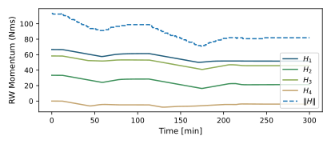
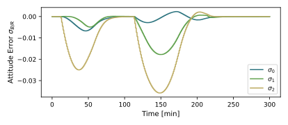

scenarioMomentumDumping
Overview
This script shows how to perform momentum dumping when the momentum accumulated on the reaction wheels is above a user-defined threshold. In this case, such threshold is set at 80 Nms. The dumping is performed by a set of 8 thrusters that can provide control about the three principal axes of the spacecraft. To perform the momentum dumping, three concatenated modules are used:
Module: thrMomentumManagement: computes the amount of momentum to be dumped, based on current stored momentum and the user-defined threshold. It is important to notice that, for the three concatenated modules to work correctly, this first module cannot be run at simulation time \(t = 0\). In this script, the method
Resetis called on Module: thrMomentumManagement at \(t = 10\) s, which coincides to the time at which the first desaturating impulse is fired.Module: thrForceMapping: maps the amout of momentum to be dumped into impulses that must be delivered by each thruster. This module is originally implemented to map a requested torque into forces imparted by the thrusters, but it can be applied in this case as well, because the math is the same. The only caveat is that, in this case, the output should not be scaled by the thruster maximum torque capability, since the desired output is an impulse and not a torque. To deactivate the output scaling, the
angErrThreshinput variable for this module must be set to a value larger than \(\pi\), as specified in the module documentation.Module: thrMomentumDumping: computes the thruster on-times required to deliver the desired impulse. A
maxCounterValueof 100 is used in this example to allow the spacecraft to maneuver back to the desired attitude after each time the thrusters fire.
For this script to work as intended, it is necessary to run the flight software and the dynamics at two different frequencies. In this example, the simulation time step for the flight software is 1 second, whereas for the dynamics it is 0.1 seconds. This is necessary because the Module: thrMomentumDumping automatically uses the task time step as control period for the firing. However, if the dynamics is integrated at the same frequency, this does not give enough time resolution to appreciate the variation in the momentum.
The script is found in the folder basilisk/examples and executed by using:
python3 scenarioMomentumDumping.py
Illustration of Simulation Results
In this examples, the spacecraft is already at the desired attitude, but the four reaction wheels are saturated (the total angular momentum exceeds the threshold). The desaturation happens at \(t = 10\) when the Module: thrMomentumManagement is reset. Three firings are sufficient to dump the momentum below the set threshold. The following figures illustrate the change in momentum for the four wheels \(H_i\) for \(i = 1,...,4\) and the total angular momentum \(\|H\|\), and the attitude errors, as functions of time, with respect to the desired target attitude.
 The plots show that the momentum is dumped below the threshold. Also, the desired attitude is recovered between the first and second firing, and after the third, but between the second and the third there is not enough time for the spacecraft to slew back to that attitude.
The next two plots show the amount of impulse [Ns] requested for each thruster, and the times during which each thruster is operational. As expected, 100 control times pass between each firing: because the control time coincides with the flight software simulation time step of 1 s, this means that firings are 100 seconds apart.


- scenarioMomentumDumping.plot_DH(timeData, dataDH)[source]
Plot the body angular velocity rate tracking errors.
- scenarioMomentumDumping.plot_OnTimeRequest(timeData, dataOnTime, numTh)[source]
Plot the thruster on time requests.
- scenarioMomentumDumping.plot_attitude_error(timeData, dataSigmaBR)[source]
Plot the attitude errors.
- scenarioMomentumDumping.plot_rate_error(timeData, dataOmegaBR)[source]
Plot the body angular velocity rate tracking errors.
- scenarioMomentumDumping.plot_rw_momenta(timeData, dataOmegaRw, RW, numRW)[source]
Plot the RW momenta.
- scenarioMomentumDumping.plot_rw_speeds(timeData, dataOmegaRW, numRW)[source]
Plot the RW spin rates.